Classification and Regression Trees (CART)
Goals
- Introduce CART (“classifiation and regression trees”)
- Interepret CART as a variable selection procedure for (linear or logistic) regression
- Briefly survey the zoo of related procedures
- Node purity measure
- Tree complexity
- Branching rules
Reading
The primary reading is @isl:2021:gareth 8.1. The reading in @esl:2009:hastie section 9.2 may also be useful. These notes are intended only as a supplement to the primary reading and a reminder to myself of what to talk about in lecture.
Context
Up to this point, we have effectively studied learning algorithms that take the form of some modification of a linear function of a fixed set of regressors, both for regression and classification. We learned how to expand this set of regressors without bound using via non–linear transformations, and to choose among them using regularization and cross–validation. A key problem with such methods is that they require enumeration of the set of transformations in advance. This can be computationally prohibitive, and is also conceptually unsatisfying. Why can’t we learn the best transformation rather than choosing it from a predetermined set?
For the remainder of the class, we will study learning procedures that can be seen as determining the set of transformations algorithmically. Of course they do not need to be seen this way, and can instead simply be treated as distinct learning procedures in their own right. The increased complexity of these procedures means they (a) they will be less amenable to theoretical analysis, and (b) they often take the form of a “zoo” or “menu” of similar–looking procedures offering different practical and conceptual tradeoffs.
Regression trees as partition selectors
Suppose we are regressing \(y\in \mathbb{R}^{}\) on \(x\in \mathbb{R}^{}\), suppose that \(y\) is observed without noise, and that \(y= f(x)\) looks like this:
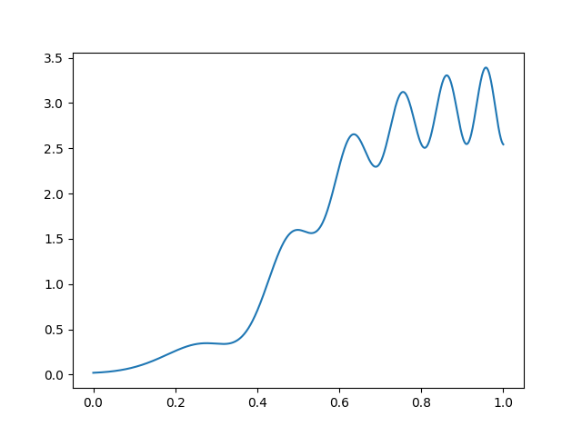
If we wanted to fit this function with basis functions of width \(\Delta\), we need a different \(\Delta\) for different parts of the space, and choosing a fixed \(\Delta\) will be wasteful. Note how we used too many indicator for the left part and too few for the right part:
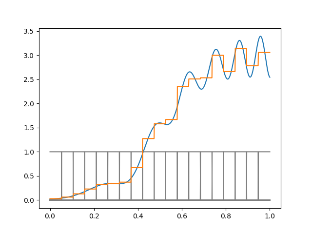
Of course in this example we know the right thing to do, but in high–dimensions you typically can’t just look and figure this out.
Regression trees for greedy partition selection
It turns out that selecting the optimal partition of a given side is computationally hard. Regression trees can be thought of as an automatic way to form indicator basis functions that do well for the particular function at hand.
Suppose to begin with that we are only willing to use one indicator function. The best spot to split is the one that produces the largest decrease in squared error. This can be found by brute force just by sorting \(x\).
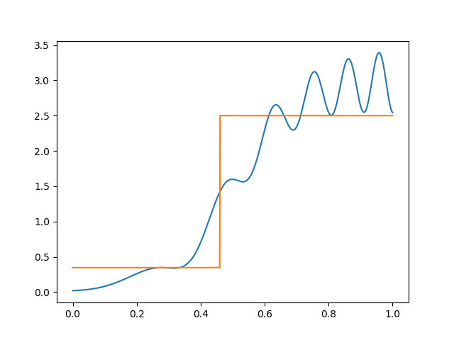
We can represent this split as a tree:
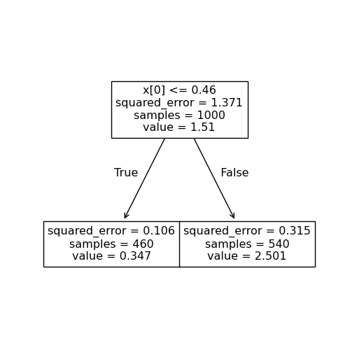
Given this first split, we can successively split the later regions. That is, we can divide each region into sub–regions, choosing the optimal split at each point. Here, the next split looks like this:
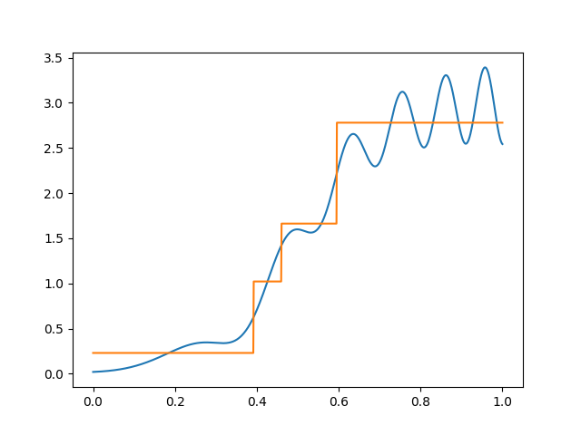
We can represent this split as a tree as well:
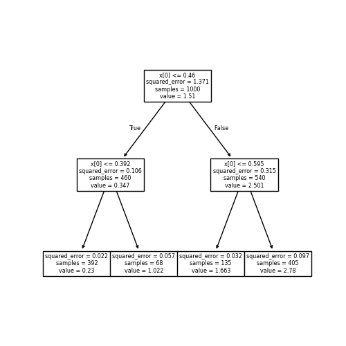
Note that if we don’t split successively, we don’t get a tree. In one dimension every partition is a tree, but in higher dimensions this isn’t true, as we see below.
By adding more and more splits, we get more and more regions. Here, I have added up to eight splits:
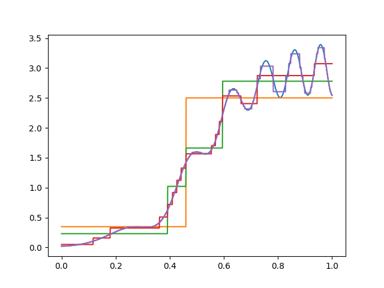
When to stop?
Note that you can get exponentially many regions in the number of splits, and that (by default) all the splits are generated — with \(8\) splits there are \(2^8\) terminal or “leaf” nodes. As the number of splits increases, the expressivity of the tree function increases.
The rules for when to stop splitting are flexible. A common choice is to stop splitting when a leaf node falls beneath some number of observations. Another reasonable choice is to stop splitting when the split is not able to achieve a particular increase in the loss function (or, equivalently, a sufficient decrease in “node impurity” as defined below).
Tree trimming
The generated trees in our example are still not very efficient, in that we use more splits than are necessary for the left than for the right. (Note that in this case I happened to generate every possible split up to the specified depth.)
In order to choose a more optimal tree, we “trim” the tree back by regularizing the size of the tree. Given a starting tree \(T\) and a cost complexity parameter \(\alpha\), we find the subtree that minimizes
\[ \textrm{Cost complexity empirical risk}(T') = \sum_{t\in T'} \sum_{n \in t} (y_n - \hat{y}_{t})^2 + \alpha |T'|, \]
where \(t\in T'\) means \(t\) is a leaf node of \(T'\), \(n \in t\) means \(\boldsymbol{x}_n\) is assigned to leaf node \(t\), and \(|T'|\) counts the number of leaf nodes.
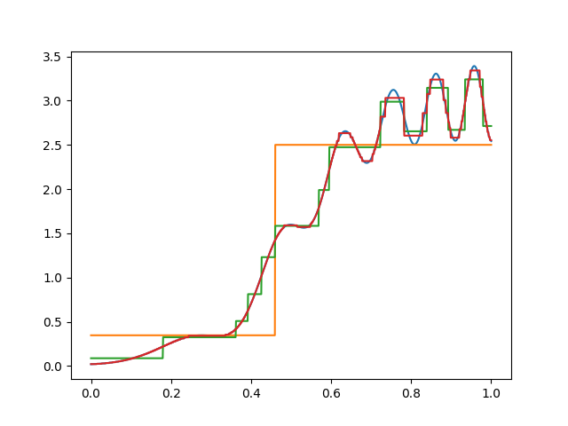
Here’s one trimmed tree for our function of interest. Note that there’s more trimming on the left than on the right, since the function is smoother there.
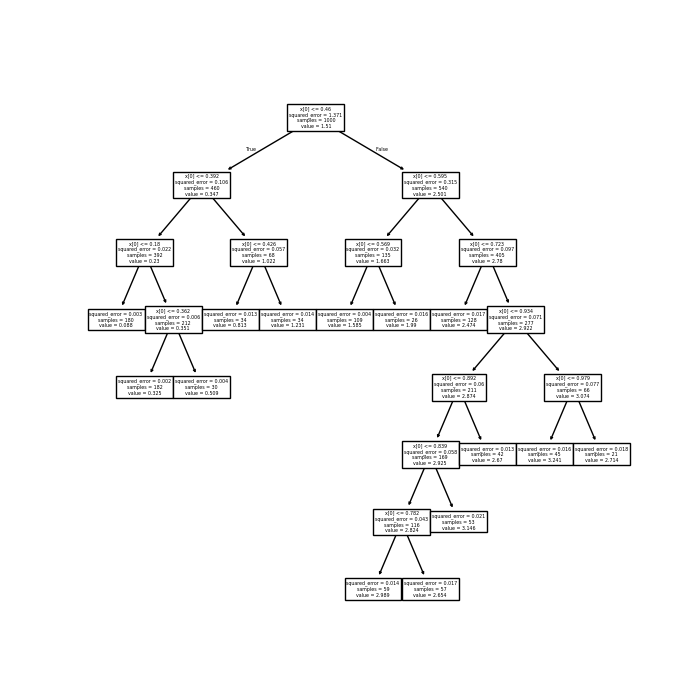
In practice, you’d choose the best \(\alpha\) using cross–validation. Here, I just picked one that looks good, since there is no noise in the data.
In higher dimesions
The one–dimensional example above is simple but a little misleading, since in one dimension every partition is a tree. In higher dimensions, tree–based partitions are a subset of all partitions, as shown in this picture from @isl:2021:gareth. (The bottom right plot of the figure is misleading — it seems like the prediction surface slopes up between partitions, but this is only an artifact of how the authors plotted the surface using a coarse, finite grid and a plotter that automatically interpolates.)
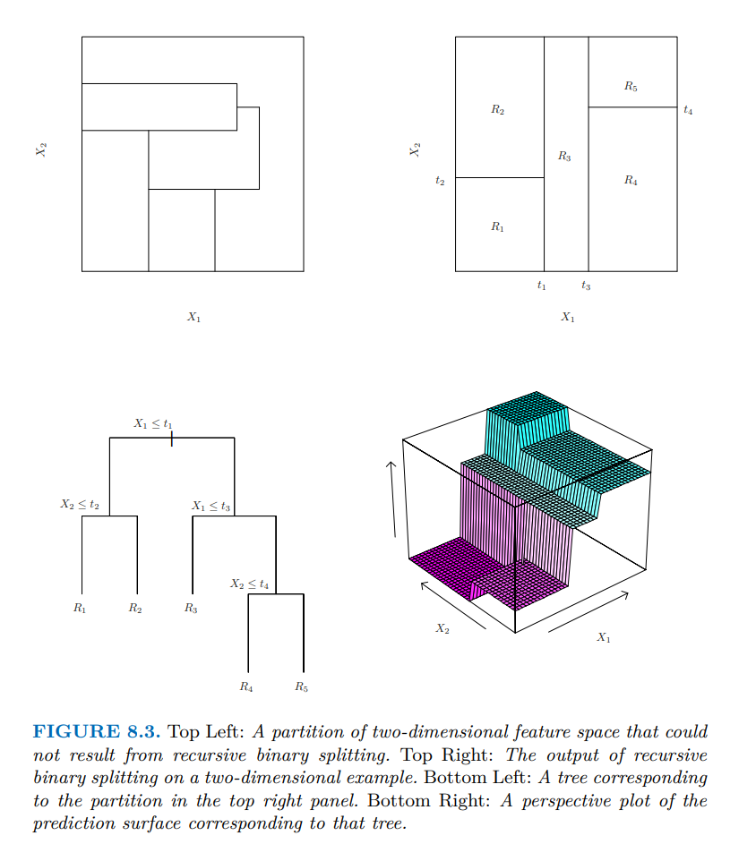
Node impurity
The above example is for regression, but trees can be used for classification as well. The main reference is @isl:2021:gareth chapter 8, but I will review the procedure in lecture. These details can be readily extended to regression trees where squared loss replaces classification losses.
Given a tree, we can produce a classifier by just taking the majority vote in the leaf. However, it can also be useful to produce a probability estimate \(\hat{\pi}_t\) which is the proportion of \(y_n = 1\) among \(n \in t\). Note that these correspond exactly to optimizing cross–entropy or least–squared classification loss using the partition indicators as regressors.
The tree is built greedily by minimizing a notion of “node impurity” at each step. Suppose you are considering how to split a leaf \(t\) (applying the same reasoning to the root node tells how to start the tree). For a given regressor \(x_{nk}\), and a given split point \(c\), let
\[ \begin{aligned} N_{c}^{-} ={}& \textrm{\# of data points in $t$ with }x_{nk} < c \\ N_{c}^{+} ={}& \textrm{\# of data points in $t$ with }x_{nk} \ge c \\ N_{t} ={}& \textrm{\# of data points in $t$} \\ \bar{y}_c^- ={}& \textrm{average of $y_n$ for $n \in t$ with }x_{nk} < c \\ \bar{y}_c^+ ={}& \textrm{average of $y_n$ for $n \in t$ with }x_{nk} \ge c. \\ \bar{y}_t={}& \textrm{average of $y_n$ for all $n \in t$}. \\ \end{aligned} \]
(How we break ties doesn’t matter much.) Then by splitting the node usign \(x_{nk}\) at \(c\) we decrease the total loss by
\[ \underbrace{ \sum_{n \in t,x_{nk} < c} (y_n - \bar{y}_c^-)^2 + \sum_{n \in t,x_{nk} \ge c} (y_n - \bar{y}_c^+)^2 }_{\textrm{Loss after splitting}} - \underbrace{ \sum_{n \in t} (y_n - \bar{y}_t)^2 }_{\textrm{Loss before splitting}} \]
For each variable, the variable \(c\) can be chosen by brute force by sorting \(x_{nk}\) for \(n \in t\), which is computationally tractable because it’s only a one–dimensional problem. The CART algorithm chooses splits by finding a \(c\) and \(k\) optimally over all possible choices.
We can rewrite this as
\[ N_c^{-} R_c^{-} + N_c^{-} R_C^{+} - N_tR_t, \]
where \(R\) measures the “impurity” of the node — in this case by using the sample variance. (Note that splitting can never decrease the purity of the node as long as the fit within the node is chosen to minimize the measure of purity.)
Suppose we are considering the node purity with \(K\) classes, each of which is estimated within the node to occur with probability \(\hat{\pi}_k\). As with loss functions there are different common choices for classification node impurity. Three common choices are
- Misclassification rate
- Entropy loss
- Gini index
The misclassification rate is simply the number of observations that do not match the majority class.
The entropy is given by
\[ \textrm{Entropy} = \sum_{k} \hat{\pi}_{k} \log \hat{\pi}_{k}. \]
The Gini index is the implied probability of making a classification error if the predicted class is chosen with probability proportional to its marginal probability within the class. The Gini loss is
\[ \textrm{Gini}(\hat{\pi}) = \sum_{k} \sum_{k' \ne k} \hat{\pi}_{k} \hat{\pi}_{k'} \]
That is, if we guess class \(k\) with probability \(\hat{\pi}_{k}\), and draw a true class \(k'\) with probability \(\hat{\pi}_{k'}\), the Gini loss measures how likely we are to guess wrong. We can also rewrite the Gini loss as
\[ \textrm{Gini}(\hat{\pi}) = \sum_{k} \hat{\pi}_{k} (1 - \hat{\pi}_{k}), \]
which is the sum of the variances of each indicator. The Gini index can be seen to be minimal with \(\hat{\pi}_{k} = 1\) for some \(k\), so the “purest” node has only a single class in it.
The arboretum (tree zoo)
Over the years, a lot of variants of the above procedure have been developed. Even a coarse survey is beyond the scope of the class, but @loh:2014:fiftyyearsoftrees is a nice survey.
Some variants include:
- More complex decision rules in a leaf (e.g. affine rules)
- Multiple splits per node
- Rules for whether or not to make a particular split (e.g. using statistical significance)
- Different measures of node purity
- Different pruning mechanisms (including Bayesian methods!)
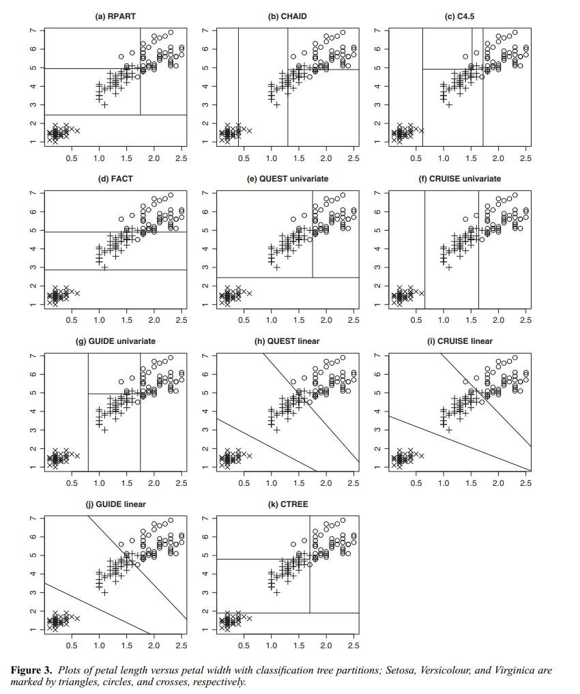